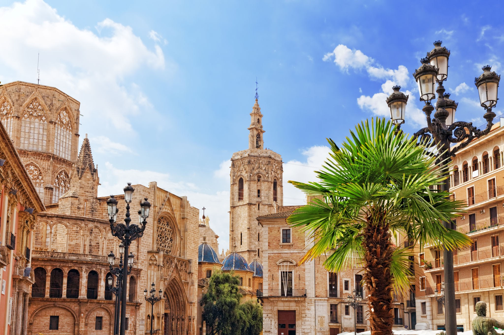

مواقع تراثية
استكشف أبرز المواقع التاريخية والثقافية في إسبانيا والتي تجسد تراثها العريق.
أشهر المواقع التراثية والحديثة الموجودة في المدن الإسبانية
برشلونة

برشلونة، مدينة إسبانية ذات تراث ثقافي وعمراني مميز. تشتهر بكاتدرائية ساغرادا فاميليا وحياتها الثقافية النابضة.
إشبيلية

إشبيلية هي عاصمة إقليم الأندلس في جنوب إسبانيا. المدينة تتميز بطابعها الأندلسي الفريد.
فالنسيا
فالنسيا تتميز بتراثها المعماري المتنوع، من كاتدرائية فالنسيا الجوتية إلى مجمع الفنون والعلوم الحديث.